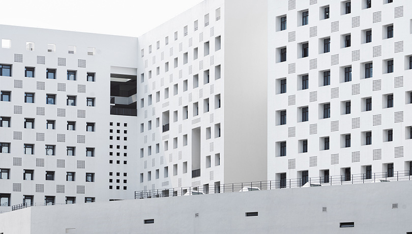

师资队伍

副教授

深圳大学传播学院师资力量雄厚，梯队完备。目前有专任教师58人，其中正教授15人，博士生导师14人，国家教学名师、教育部教指委、省级教学名师、广东省千百十人才等9人。其中既有老一辈代表性学者何道宽教授、吴予敏教授、辜晓进教授等，也有中生代的知名学者王晓华教授、丁未教授、尹连根教授等，更有年青学者代表周裕琼教授、李明伟教授、常江教授等。
-
58专职教师
-
15正教授
-
14博士生导师
师资队伍
-
曹博林/副教授个人简历：曹博林，深圳大学传播学院长聘副教授，博士生导师。美国康奈尔大学访问副教授(2024),北卡罗莱纳大学教堂山分校公共卫生项目博士后，香港城市大学传播学博士，武汉大学传播学硕士，中山大学新闻学学士。2017年4月加入深圳大学传播学院，现任网络与新媒体系主任。近年在SSCI/SCI/CSCCI期刊发表论文60余篇，其中近30篇为第一或通讯作者。文章发表在Information, Communication & Society, Health Communication, Compute...研究领域：网络传播、健康传播、跨群体传播
-
黄嘉玲/副教授个人简历：2008.9-2012.5 广东外语外贸大学 国际新闻学 本科2012.8-2014.5 美国迈阿密大学 传播学 硕士2014.8-2018.5 美国纽约州立大学水牛城分校 传播学 博士研究领域： 环境传播 媒介心理开设主要课程：数据新闻与可视化近五年发表论著：1.Huang, J., & Ells, K. (2020). Risk Here vs. Risk There: Intention to Seek Information About Gulf Coastal Erosion. Environmental Communication, 1-15.2.Huang, J., & Yang, J. Z...研究领域：环境传播、媒介心理
-
李莹/副教授个人简历： 李莹，于中国人民大学新闻学院获得文学学士学位（2006年）和文学硕士学位（2008年），于香港城市大学媒体与传播系获博士学位（2013年）。现任深圳大学传播学院副教授、硕士生导师。主要研究领域： 政治传播；营销传播；媒体与社会执教课程： 广告学概论、广告效果评估、广告研究主持课题：2019年全国港澳研究会港澳研究项目：“粤港澳大湾区”青年的人生理想、 家庭观念、工作就业比较调查”2017年广东省高等...研究领域：政治传播、营销传播、媒体与社会
-
刘晓燕/副教授个人简历：2002年6月获得深圳大学文学硕士学位；2008年6月获得中山大学文学博士。讲师。主要从事文化研究、图像传播研究、文艺学研究等。 主要学术成果有： 1、修辞学视野中的视觉文化研究，深圳大学学报，2008年第3期 2、中国视觉修辞研究的进路，长江师范学院学报，2008年第1期 3、后现代语境下阿多诺美学的复兴与超越，湖南科技学院学报，2008年第3期 4、艺术自律性与大众文化时代的乌托邦，传播与文...研究领域：文化研究、图像传播研究、文艺学研究
-
刘莉萍/副教授刘莉萍，深圳大学传播学院百人计划副教授。厦门大学文学学士及经济学学士，香港中文大学理学硕士（新媒体），香港浸会大学哲学博士（健康传播方向），新加坡国立大学博士后。曾任澳门大学传播系研究助理教授。2024年3月加入深圳大学传播学院。近年来发表三十多篇SSCI期刊论文，其中二十多篇为第一作者。文章主要发表在Health Communication，Journal of Health Communication，Mobile Media & Communication，Social Science & ...研究领域：新媒体传播、健康传播、媒介效果
-
茅知非/副教授个人简历：茅知非，上海交通大学学士，英国伦敦政治经济学院硕士，香港中文大学传播学博士。在取得博士学位后，她分别在德国慕尼黑大学社会学系以及香港中文大学新闻传播学院完成博士后项目。她于2018年加入深圳大学传播学院，目前担任副教授职位。研究领域：风险研究，金融传播，环境传播，新媒体平台研究开设主要课程：财经新闻，媒介素养，社会科学质化研究，专业外语，新闻传播学理论研读近期主持的科研项目：新时代的财经...研究领域：风险研究、金融传播、环境传播、新媒体平台研究
-
任玉琛/副教授个人简历：2017.1-2017.05 北卡莱罗纳大学教堂山分校访问学生 2015.1-2018.11 香港中文大学 传播学-哲学博士 2012.8-2014.12 香港中文大学 传播学-哲学硕士2008.9-2012.06复旦大学 传播学-文学学士。主要研究领域：健康传播与新媒体、媒介效果、说服执教课程：《传播学理论》《创意思维与学术思维》《用户体验设计工作坊》《说服传播》主持课题：1. 2020-2022年，广东省...研究领域：健康传播与新媒体、媒介效果、说服
-
孙海峰/副教授个人简历 ：1975年生于山东青岛。1993－1997年就读于长春地质学院地质系／吉林大学地质学院。获理学学士学位。1997－2000年就读于汕头大学中文系，获文学硕士学位。 2000－2003年就读于山东大学中文系，获文学博士学位。2003年起任教于深圳大学文学院、传播学院、传媒与文化发展研究中心，现为传播系副主任。研究方向：美学与媒介哲学；网络新媒体传播。讲授课程 ：1、本科生课程：美学概...研究领域：美学与媒介哲学、网络新媒体传播
-
王建磊/副教授个人简历：先后毕业于中国矿业大学、上海大学、中国传媒大学，分别获得文学学士（2001）、文学硕士（2008），传播学博士（2011），传播学博士后（2013）。2011年9月至2014年8月在深圳广播电影电视集团工作，担任高级研究员。2014年9月入职深大传播学院，2017年晋升为副教授，同年担任硕士生导师。曾赴密苏里大学新闻学院访学（2009-2010）；曾获第19届深圳新闻奖三等奖、广东省新世纪电视理论贡献奖、第六届深圳哲...研究领域：网络视听、媒体融合、移动互联网
-
汪翩翩/副教授个人简历：深圳大学传播学院副教授，硕士生导师，香港城市大学博士，美国德州大学奥斯汀分校访问学者，深圳市海外高层次人才，南山区“领航人才”，获深圳大学“荔园优青”、“新锐研究生导师”等称号。传播学院计算传播学研究团队主要核心成员。主持或参与多项国家级课题，在SSCI以及传播学中文权威期刊发表多篇中英文论文。学术兴趣为在线舆论的相关研究领域，围绕国家课题，采用计算传播学的方法，充分利用现有的大数据...研究领域：计算传播学、在线舆论研究、健康传播与健康讨论
-
王伟/副教授个人简历：深圳大学传播学院网络与新媒体系助理教授、硕士生导师（视听传播方向）。东北师范大学学士（2008）、硕士（2011）、博士（2016），北京大学博士后（2018）。为“深圳市高层次人才”后备级人才引进来深工作。主持项目4项，其中，国家级项目1项、教育部项目1项；以第一作者发表CSSCI收录论文10篇，CSSCI收录译文7篇。院线电影网络评分栏目“影向标”编辑；“迷影精神奖”与“迷影展映”系列活动策划；电影学术网络刊物《...研究领域：数字视听媒介文化、媒介哲学、人机传播
-
叶昌前/副教授个人简历：深圳大学传播学院副教授、硕士研究生导师。原复旦大学新闻学院副教授、硕士研究生导师；中国广播电视协会媒介融合研究基地研究员。1983年-1987年：西北大学中国语言文学系读本科，获文学学士学位。1987年-1990年：西北大学中国语言文学系读硕士研究生，获文学硕士学位。1990年-1996年：西北政法大学任教。1992年-1995年：兼职于陕西经济广播电台、陕西有线电视台，任记者、主持人。1997年-2005年：任教于复旦大学新闻学...研究领域：广播电视、网络视听